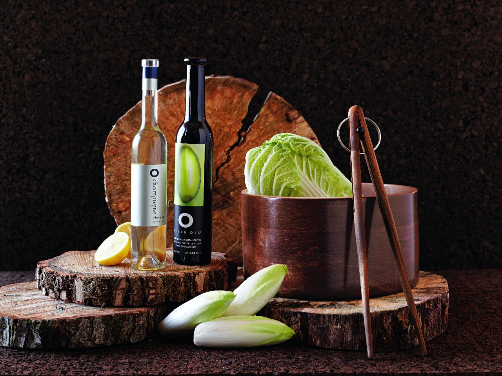

Chapter 01
A big, growing market that Americans feed almost entirely with imported oil — and a country that barely produces any of its own. Understand that gap and you understand where a small brand can stand.
By the usual market-research tallies, Americans bought roughly $3 billion of olive oil in 2024 — Grand View Research puts it at about $3.13 billion 1. Forecasters disagree on the decimal but agree on the direction: a ~7–8% compound annual growth rate into the early 2030s. IMARC projects 7.73% a year to about $6.3 billion by 2033; Grand View sees 7.4%; Research and Markets, 8.14% 2.
Here's the fact that shapes everything else: the United States is the largest olive-oil market outside the European Union, yet it grows almost none of its own. About 283,000 tonnes were consumed in 2024, met largely by roughly 278,000 tonnes of imports — chiefly from Italy, Spain, and Tunisia 3. Domestic production covers only a sliver of demand (more on exactly how small a sliver in Sourcing).
For a would-be American producer that cuts two ways. The supply of genuinely US-grown oil is scarce — a real constraint on a "100% American" pitch. But the shelf is dominated by imported commodity brands, which is exactly the incumbent a fresher, local, story-driven bottle can differentiate against.

Americans are light olive-oil drinkers. Per-capita consumption sits around 1 litre per person per year, against roughly 14 litres in Spain and 11 in Italy, with Greece higher still — Mediterranean households use ten to twenty times more per head 4. Household penetration in the US has climbed to about half of homes, up from roughly a third five years earlier 5.
Low consumption from a rising base is the friendliest kind of market: the category is being built, not fought over at saturation. Every cooking-show mention and Mediterranean-diet headline lifts the whole tide.
Across every market report the growth drivers repeat 26:
You are not going to out-grow California or out-buy Deoleo. The realistic seams for a small Upstate operation are:
Select excellent US oil, bottle it fresh, and vouch for it. Your value is judgment and care, not acreage.
An Upstate NY brand, sold through Hudson Valley shops, farmers' markets, and Northeast specialty channels, competes on nearness and story.
Harvest dates and a named source counter the "rancid supermarket oil" reputation — and justify a premium.
Tastings, gift sets, and a direct-to-consumer store keep margin at home instead of feeding the distributor stack.
All links accessed 2026-07-23. Market-size and share figures are estimates that vary by research firm; treat them as directional.